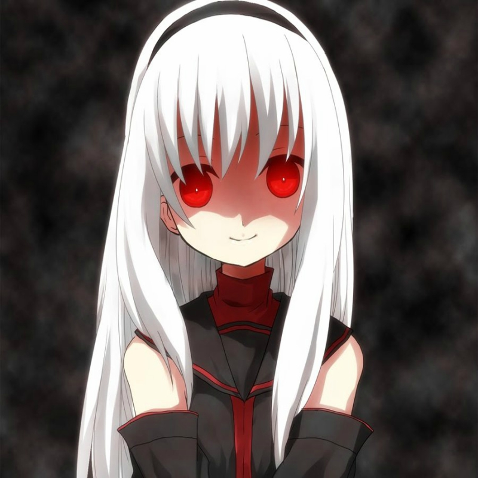
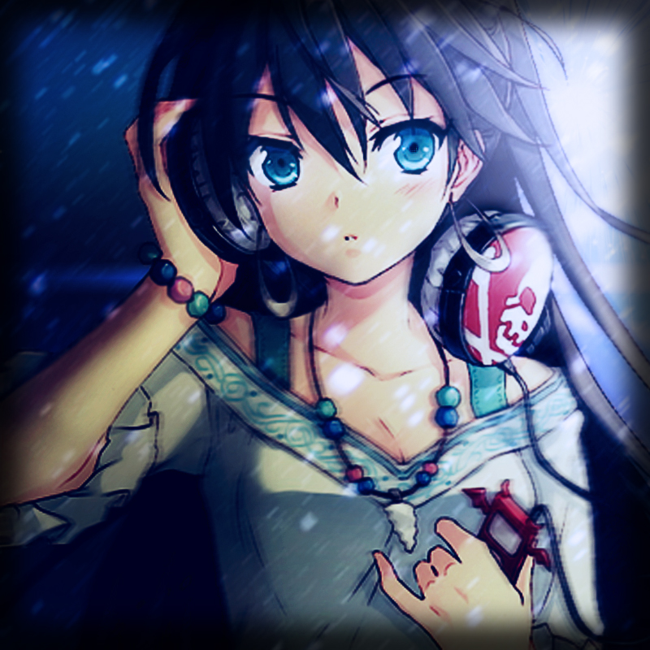

Do you Want To Watch Anime ?
THE COMING OF spring means many things, as life springs anew, tulips bloom, and of course, a new season of anime shows hits the air in Japan. While U.S. fans used to have to wait patiently for new Japanese series to (legally) hit American shores, most of them are available for your viewing pleasure right now. But which ones are worth watching? We’ve put together a handy list of seven favorites that stand out from the crowd.

Or Do you Want To Listen to Some songs ?
Trying to choose the best anime of all time is an impossible task. Much like trying to pick the best movie ever made, there are too many masterpieces to choose from. But trying to pick the best anime theme songs? That's much easier. Through the years there are certain opening and ending themes from TV series and songs from feature-length anime that have won iconic status in Japanese culture and in many cases, international culture.
How about reading a manga ?
In Japanese, the word manga is the word given to any comic created in Japan. The word has recently acquired the same meaning in English. Manga has become more and more popular over the years, forming an important part of Japanese culture. Manga are written by mangaka and are generally first published in magazines. Thereafter, they may be published as tankobon, a compilation of a given series bound in book form.